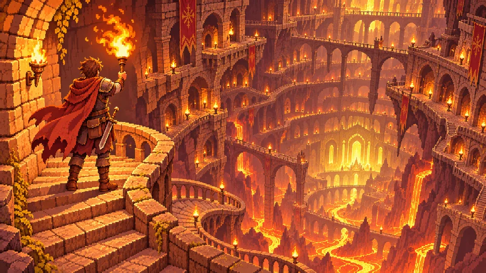

❤️ 30/30
🔮 0/0
Úroveň 1
⚔️ 3
🛡️ 1
✨ 1
🍖 100 %
💰 0
🏹 0
🔥 80 %
🤖 Ukázka
Při sestupu po schodech se hra uloží sama do nové automatické pozice (drží se posledních 10). Jinak ukládáš a načítáš sám.
Kouzlit umí každý hrdina – stojí to manu, která se pomalu doplňuje sama (rychleji s vyšší ✨ magií). Nová kouzla se naučíš každou druhou úrovní. Čím víc kouzlíš, tím líp ti to jde.

Vyber hrdinu.
Každou třetí úroveň si vybereš jednu ze tří. Platí až do konce výpravy.
Zde leží dobrodruh, který šel o schod hlouběji, než měl.